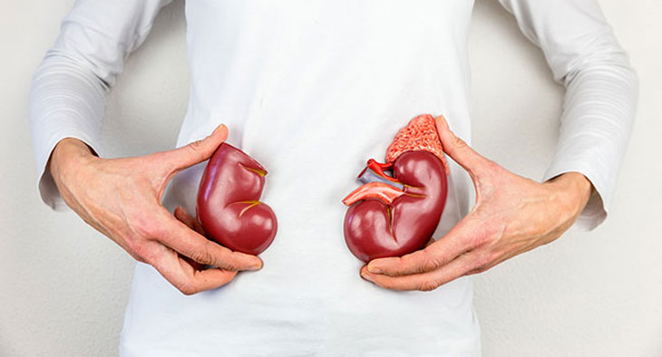

A statisztika szerint a nőknél 75-ször gyakoribb a hólyaghurut, mint a férfiaknál. Ha a betegséget nem kezelik, akkor krónikus formát is ölthet, amely nagyon veszélyes is lehet, és akár tünetmentes észrevétlen is maradhat. Hogy milyen elsősegélyre van szüksége az embernek, és mit kell tenni, hogy megakadályozzuk, hogy a betegség krónikus formát öltsön, Dr. Pataki József, urológus mondja el nekünk.

– Jó napot kívánok, Pataki Doktor Úr! Kérem, magyarázza el nekünk, mi az oka a hólyaghurutnak?
– A fő oka a húgyhólyagba került baktériumok. Leggyakrabban pedig a fekália baktérium. De betegségeket okozhatja még:
- hipotermia (kihűlés) vagy felfázás
- hormonális zavarok;
- mozgásszegény életmód;
- nemi szervek gyulladása;
- elhanyagolt személyi higiénia;
- trauma (leginkább közösülés során szerzett);
- stressz;
- csípős ételek és alkoholfogyasztás.
– Hogyan és miben nyilvánul meg a betegség?
– Minden szervezet egyénileg reagál a fertőzésre. De az akut hólyaghurut esetében a leggyakrabban fájdalmas vizelést tapasztalnak, és szúró fájdalom jelentkezik az alsó hasban, emellett pedig gyakran megfigyelhető hőemelkedés is. Gyakorta felfedezhető a vizeletben zavaros üledék vagy vér. De nem szabad megfeledkeznünk a hólyaghurut rejtett formáiról sem.
– Honnan tudom, hogy beteg vagyok, ha nincsenek tünetek?
– Éppen ezért ilyen veszélyes a hólyaghurut. A gyulladásos folyamatokat csak további vizsgálatok mutathatják ki: részletes vérvizsgálat és cisztoszkópia (húgyhólyagtükrözés).
– De ha a hólyaghurut nem okoz kellemetlen tüneteket, figyelmen kívül lehet hagyni és magától elmúlik?
– A kezeletlen vagy nem megfelelő idően kezelt hólyaghurut krónikus formát ölthet, amely számos következménnyel jár és szövődményekhez vezet.
– Milyen szövődményekhez?
– A hólyaghurut hatással van az urogenitális rendszer szerveire és más szervekre is, amely oylan betegségek és problémák kialakulásával járhat, mint a:
- meddőség;
- petevezeték vagy petefészkek gyulladása;
- vesetályogok;
- veseelégtelenség;
- hólyagkörüli gyulladás;
- vesemedence-gyulladás;
- trigonitis;
- hólyagfájdalom szindróma;
- vesicoureteralis reflux.

– Mit tehetünk ilyen esetekben?
– A hólyaghurut kezelésének átfogónak kell lennie. Gyakran jönnek hozzám olyan betegek, akik egy ördögi körbe szorultak: megbetegedett, beszedte az antibiotikumot, és így tovább. Ez már gyökereiben helytelen. Ha az antibiotikum beszedése után idővel a hólyaghurut tünetei mégis jelentkeznek, a betegség eleve nem is lett kezelve. Továbbá sokan elhanyagolják az egészségüket, és nem szedik be rendesen a felírt antibiotikumot. Csak mert jobban érzik magukat, az még nem jelenti azt, hogy egészségesek is. Teljes körű kezelést kell végezni, hogy a szervezet a kórokozó baktériumok ellen antitesteket kezdjen termelni.
– Elmondaná, hogyan is néz ki egy átfogó kezelés?
– Az egészséges életmód fontos: el kell kerülni a megfázást, fel kell függeszteni a a szexuális életet a betegség időtartama alatt, nem szabad alkoholt fogyasztani és fűszeres ételeket. A kezelésnek arra kell irányulnia, hogy a lehető leghamarabb megszabaduljon a kórokozótól, megszüntesse a tüneteket és megakadályozza a betegség megismétlődését. A betegség megismétlődésének megelőzése érdekében csökkenteni kell a gyulladásos folyamatokat és a fájdalmat, normalizálja a vizelést gyógynövények aktív használatával. A praxisomban én az készítményt használom. Ez az eszköz tekinthető a leghatékonyabbnak.

– Meséljen még erről a kezelési módszerről.
– A egy olyan készítmény, amely eltávolítja a hólyaghurut tüneteit antibiotikumok nélkül. Antibakteriális, gyulladáscsökkentő és görcsoldó hatással bír. Rövid idő alatt megszabadít a fertőzéstől, megszünteti az akut fájdalmat és normalizálja a vizelést. Fontos különbség a többi gyógynövényhez képest, hogy irányított hatása van, megakadályozza a betegség visszatérését, és segít a szervezetnek erősíteni az immunrendszert.
– Ez egy olyan gyógymód, amely segít az akut és krónikus hólyaghurutnál is?
- Az enyhíti a húgyhólyag gyulladását mind az akut, mind a krónikus hólyaghurut esetén. A különbség az, hogy akut hólyaghurut esetén megakadályozza, hogy a betegség krónikus formát öltsön. A krónikus eseteknél 95%-ban csökkenti a visszatérés esélyét.
– Mennyi ideig kell szedni a készítményt, hogy az ember megszabaduljon a hólyaghuruttól?
– A gyógyszert kúraszerűen kell szedni. 28 nap alatt nem csak a tünetek múlnak el, de a mikroflóra is helyreáll, és egy védőréteg jön létre, amely megakadályozza a baktériumok újbóli bejutását. Vagyis a betegnél egy védelem jön létre és erősödik az immunitása is. Ahhoz, hogy újra megbetegedjen a beteg, nagyon kicsi az esély.
– Nagyon köszönöm, Pataki Doktor Úr, a hasznos információkat kaptunk ma arról, hogyan kell megfelelően kezelni a hólyaghurutot. Nagyon jó hír, hogy nem kell többé antibiotikumot szedni, és természetes eszközökkel is lehet kezelni a problémát.
— Köszönöm a meghívást. Csak úgy megjegyezném, hogy ma már az orvosok is előnyben részesítik a természetes készítményeket a szintetikusakkal szemben. Kevésbé veszélyesek a belső szervekre és az emberi immunitásra, ugyanakkor hatékonyságuk a bakteriális fertőzésekkel szemben nem marad el szintetikus társaikénál. Eddig a az egyetlen természetes gyógymód, amely megakadályozza a baktériumok szaporodását, és lehetővé teszi a természetes védekezést, hogy megszüntesse azokat.
Lenne még kérdése?, Tegye fel közvetlenül egy szakembernek a gyártó honlapján.